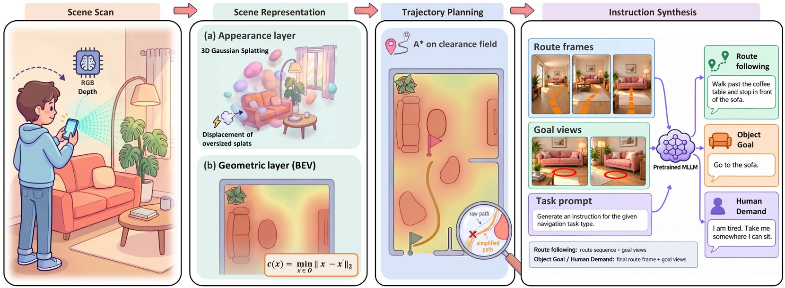
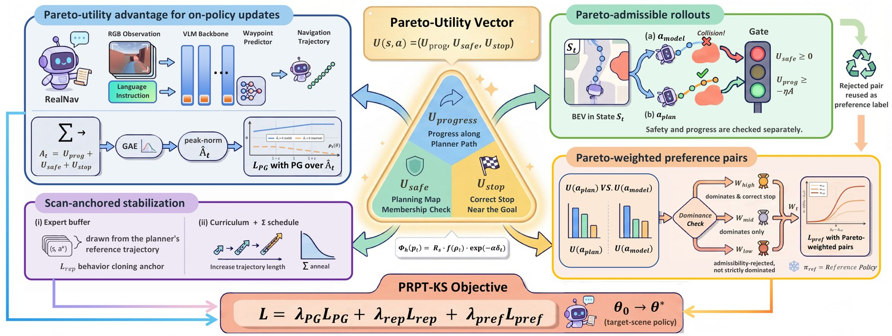

CFCS, School of Computer Science, Peking University
PrimeBot
*Equal contribution †Corresponding author
Deploying a language-guided navigation policy in a new building usually means watching it fail. Public-benchmark VLAs degrade scene by scene as layout, appearance, and language drift, and the standard fix of teleoperating fresh trajectories on site does not scale. We replace human demonstration with a single brief iPhone scan. Scan2Instruction compiles that scan into a complete training environment, automatically synthesizing executable navigation episodes with grounded instructions. PRPT-KS then adapts the policy through a closed-form Pareto utility read directly off the reconstructed scene, with no learned critic and no human labels. Across five real environments, the two designs together drive our RealNav to an 85% real-robot success rate, compared with 49% for a RealNav baseline post-trained on human demonstrations, and still achieve 82% in unscanned regions of the same buildings, compared with 41% for the same baseline. Our work turns demonstration-free scene adaptation for language-guided navigation from an aspiration into a working reality.
A handheld iPhone with a built-in LiDAR sensor captures the scene as an RGB-D video, with per-frame camera poses from ARKit or offline ORB-SLAM3. Scan2Instruction recovers two coupled layers from it: an appearance layer, a planar-regularized 3D Gaussian splat reconstructed with LiDAR depth supervision that renders photorealistic first-person views, and a geometric layer, a bird's-eye free-space map with a continuous clearance field. A* with a clearance-penalized edge cost plans collision-aware reference trajectories between sampled start and goal points, and a pretrained MLLM turns rendered route frames and goal views into three instruction types.

RealNav is built on Qwen3-VL. The instruction and a sampled history of RGB observations pass through the backbone together with a small set of dedicated navigation tokens, whose final hidden states feed a lightweight MLP action head. The head predicts K = 8 future local waypoints (x, y, θ) in the robot frame. RealNav is first pretrained on R2R-CE and RxR-CE with an MSE behavior-cloning loss, before any access to the target scene.
Because the target scene is already known, PRPT-KS reads a closed-form three-axis Pareto utility U = (Uprog, Usafe, Ustop) of path progress, obstacle safety, and correct stopping directly off the reconstructed geometry. The same vector is used three ways:
A step-wise expert buffer of planner reference actions supplies a behavior-cloning anchor, and a short-to-long trajectory curriculum and a cosine covariance schedule keep post-training stable. The unified objective combines the policy-gradient loss, the behavior-cloning anchor, and the Pareto-weighted preference loss.

We evaluate on five real scenes (an office, a cottage, a teaching building, and two apartments; 768 m2 scanned in 62 minutes in total), both in the reconstructed Gaussian scenes and on the physical robot. Human-demo-sft variants are fine-tuned on 20 teleoperated trajectories per scene.
Success rate (SR) as sim / real. Average SR is computed from pooled successes and trials across scenes.
| Method | Office | Cottage | Teaching | Apartment 1 | Apartment 2 | Average |
|---|---|---|---|---|---|---|
| 3D scene-graph mapping | ||||||
| DualMap | 0.32 / 0.17 | 0.22 / 0.13 | 0.17 / 0.10 | 0.35 / 0.17 | 0.33 / 0.17 | 0.28 / 0.15 |
| Navigation VLA | ||||||
| NaVILA | 0.25 / 0.20 | 0.20 / 0.23 | 0.12 / 0.15 | 0.19 / 0.20 | 0.22 / 0.23 | 0.20 / 0.20 |
| Uni-NaVid | 0.17 / 0.22 | 0.22 / 0.23 | 0.29 / 0.15 | 0.19 / 0.20 | 0.21 / 0.20 | 0.22 / 0.20 |
| StreamVLN | 0.26 / 0.17 | 0.26 / 0.13 | 0.10 / 0.13 | 0.23 / 0.30 | 0.30 / 0.23 | 0.23 / 0.18 |
| OmniNav | 0.26 / 0.22 | 0.19 / 0.20 | 0.19 / 0.23 | 0.27 / 0.27 | 0.25 / 0.20 | 0.23 / 0.22 |
| CorrectNav | 0.13 / 0.18 | 0.14 / 0.23 | 0.18 / 0.25 | 0.36 / 0.27 | 0.29 / 0.20 | 0.22 / 0.22 |
| CorrectNav (human-demo-sft) | 0.35 / 0.47 | 0.36 / 0.43 | 0.40 / 0.48 | 0.58 / 0.57 | 0.51 / 0.50 | 0.44 / 0.48 |
| Ours | ||||||
| RealNav | 0.22 / 0.25 | 0.24 / 0.28 | 0.17 / 0.23 | 0.22 / 0.23 | 0.30 / 0.23 | 0.23 / 0.25 |
| RealNav (human-demo-sft) | 0.37 / 0.48 | 0.34 / 0.45 | 0.42 / 0.45 | 0.56 / 0.57 | 0.49 / 0.53 | 0.44 / 0.49 |
| RealNav + PRPT-KS | 0.79 / 0.78 | 0.93 / 0.95 | 0.81 / 0.83 | 0.85 / 0.87 | 0.87 / 0.87 | 0.85 / 0.85 |
In 100 real-robot trials in never-scanned regions of the same buildings, where starts, goals, and waypoints all lie outside the reconstruction, RealNav + PRPT-KS reaches 0.82 SR, compared with 0.41 for RealNav (human-demo-sft) and 0.40 for CorrectNav (human-demo-sft).
The full pipeline compared with RealNav before scene-specific post-training and with variants that each disable one loss term of the post-training objective. Metrics are measured on the reconstructed Gaussian scenes.
| Variant | SR ↑ | SPL ↑ | NE (m) ↓ | OS ↑ |
|---|---|---|---|---|
| RealNav + PRPT-KS (Full) | 0.85 | 0.834 | 1.42 | 0.88 |
| RealNav (w/o PRPT-KS post-training) | 0.23 | 0.210 | 3.50 | 0.27 |
| w/o behavior-cloning anchor | 0.30 | 0.293 | 3.49 | 0.41 |
| w/o Pareto-utility advantage | 0.81 | 0.785 | 1.31 | 0.85 |
| w/o Pareto-weighted preference | 0.80 | 0.781 | 1.32 | 0.83 |
@inproceedings{yu2026onescan,
title = {One Scan is Enough: Demonstration-Free Adaptation for Language-Guided Navigation},
author = {Yu, Zhuoyuan and Long, Yuxing and Wang, Du and Wang, Junyang and Fan, Hongwei and Dong, Hao},
booktitle = {Advances in Neural Information Processing Systems},
year = {2026}
}